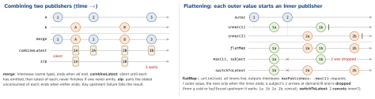

ios-swift · folio
In one line: Every operator is a struct deciding which values it emits, how it
passes demand upstream and when it ends. One failure ends the whole chain unless
caught inside a flatMap; share() gives one upstream many subscribers. Migrating keeps
Combine at the edges: .values / Future.value in, a cancellable Task for the token.
Download PDF Print view LaTeX source


How it works
- The chain’s type is the nesting:
Publishers.Map<Publishers.Filter<…>, T>. At an API boundary hide it:eraseToAnyPublisher()(a box, dynamic dispatch) orsome Publisher<Feed, Never>(Publisherhas primary associated types, Swift 5.7). flatMapneedsSelf.Failure == P.Failure: align withsetFailureType(to:)ormapError. An inner finishing does not end the stream; an inner failing does (Apple docs).try-operators (tryMap,tryFilter,tryCatch…) widenFailuretoany Error;mapErrorgets your type back.- Errors:
catch= swap in a fallback publisher;replaceError(with:)= a value;retry(n)re-subscribes upstream up to n times (cold: the request runs again, no delay);assertNoFailure()traps.
Catalogue — by job
| transform | map tryMap compactMap scan reduce collect(n) removeDuplicates replaceNil |
| limit | filter first(where:) prefix(n) prefix(untilOutputFrom:) dropFirst drop(untilOutputFrom:) output(at:) |
| combine | merge(with:) (≤8; MergeMany) · combineLatest (≤4) · zip (≤4) · append · prepend |
| flatten | flatMap(maxPublishers:) · switchToLatest |
| time | debounce throttle delay timeout measureInterval |
| errors | catch tryCatch retry replaceError mapError setFailureType assertNoFailure |
| share | share multicast makeConnectable autoconnect |
| debug | print handleEvents breakpoint breakpointOnError |
Example — refresh: one load at a time, errors stay inside
refreshTaps // PassthroughSubject<Void, Never>
.flatMap(maxPublishers: .max(1)) { _ in // taps while loading: dropped
api.feedPublisher() // AnyPublisher<Feed, APIError>
.retry(2) // GET re-sent up to 2 more times
.map(State.loaded)
.catch { Just(State.failed($0)) } // INSIDE: outer stream lives on
}
.receive(on: DispatchQueue.main)
.assign(to: &$state) // no token, no self captureSharing
- Cold publishers run per subscriber: two sinks on one
dataTaskPublisher= two requests. share()=multicast+PassthroughSubject+ implicitautoconnect()(docs);Shareis a class. No replay: a late subscriber misses values; on a synchronous upstream (Just, an array) the first subscriber drains it all.multicast(subject: CurrentValueSubject(…))replays the latest;makeConnectable()+connect()starts work after all subscribed.Timer.publish(every:on:in:)is connectable: no.autoconnect()= no ticks.
Combine → Swift concurrency
| Combine | async/await |
|---|---|
Future, one-shot | async func · try await future.value (iOS 15) |
| many values | for await v in pub.values (iOS 15) |
AnyCancellable | a Task you cancel(); SwiftUI .task |
receive(on: .main) | @MainActor |
PassthroughSubject | AsyncStream — one consumer (loops split) |
share() | nothing built in: one stream per consumer |
@Published | @Observable (iOS 17) · Observations (iOS 26) |
switchToLatest | cancel the old Task · .task(id:) |
flatMap(….max(1)) | await inside for await (serial) |
debounce merge zip | swift-async-algorithms package |
retry(n) · scheduler | loop + Task.sleep backoff · inject a Clock |
Example — typeahead, the async way
// Combine: $query.debounce(...).map(search).switchToLatest()
TextField("Search", text: $query)
.task(id: query) { // new id: old task cancelled
try? await Task.sleep(for: .milliseconds(300)) // = debounce
guard !Task.isCancelled else { return } // = switchToLatest
results = (try? await api.search(query)) ?? [] // main actor
}Testing Combine
sinkinto an array, keep the token, fulfil an expectation on completion (.collect()= all at once) — orfor awaitover.values: start iterating before you trigger, a subject’s earlier value is dropped.- Inject the scheduler; a test scheduler you
advance(by:)makesdebounceinstant. Cancel:handleEvents(receiveCancel:).
Traps
retryon a POST re-sends it; on a hot subject it only re-subscribes — nothing is replayed.flatMap(maxPublishers: .max(1))behind a subject drops, not queues — addbuffer.combineLateststays silent while one input never emitted:prepend(initial).Deferred { Future { Task {…} } }: cancelling the subscription does not cancel theTask.Futurealone runs at creation, even with no subscriber.
Remember
Values, demand, ending — ask all three of every operator. Catch inside the flatMap; share = subject + autoconnect; migrate at the edges: .values in, Task for the token.